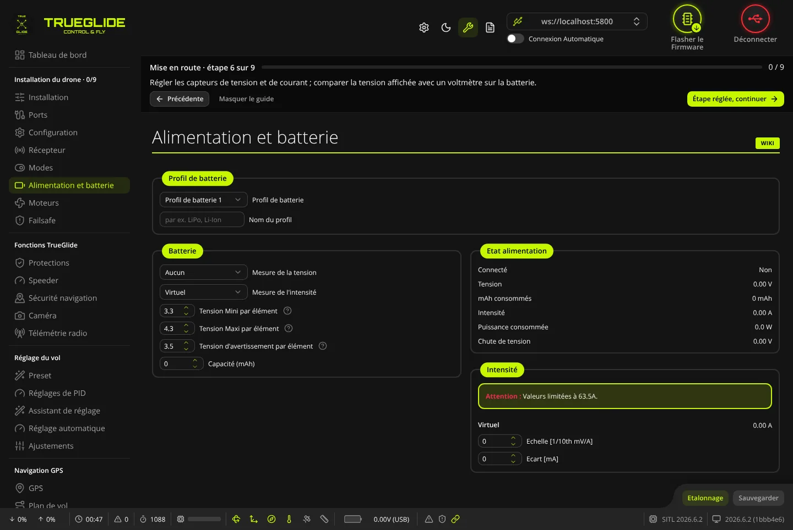
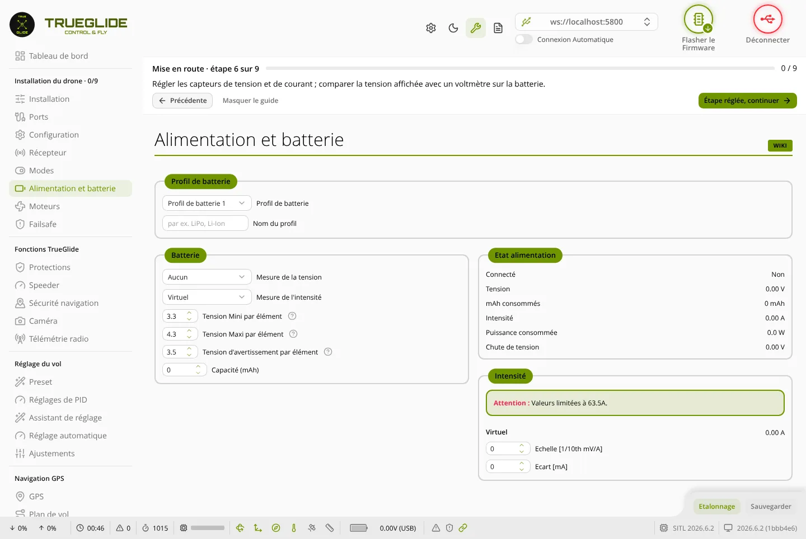

TRUE
TRUEAlimentation et batterie
L'onglet Alimentation et batterie (groupe « Installation du drone ») sert à choisir les capteurs de tension et de courant, à régler les seuils d'alerte de la batterie et à étalonner les mesures pour qu'elles collent à un multimètre.


Profil de batterie
Ce cadre n'apparaît que si le firmware gère plusieurs profils de batterie. Le firmware TRUEGLIDE en a 3.
- Profil de batterie : le profil actif. Le changer bascule tout de suite le contrôleur de vol sur ce profil, puis l'onglet relit ses valeurs. Les tensions par élément et la capacité du cadre Batterie appartiennent au profil actif : on peut ainsi garder un profil LiPo et un profil Li-Ion.
- Nom du profil : un nom libre, 8 caractères au plus (par exemple « LiPo »).
Le profil peut aussi être changé depuis la radio, avec un réglage de l'onglet Ajustements. Dans ce cas, l'onglet se met à jour seul et le journal affiche « Profil de batterie défini par le contrôleur de vol », sauf si vous avez des modifications non sauvegardées.
Batterie
- Mesure de la tension : d'où vient la tension de la batterie. « Aucun », « ADC interne » (le capteur de la carte) ou, selon la carte, « Capteur ESC » (la tension donnée par la télémétrie des ESC).
- Mesure de l'intensité : d'où vient le courant. « Aucun », « ADC interne » (capteur de courant de la carte ou de l'ESC 4 en 1 câblé sur la carte) et, selon la carte, « Virtuel », « Capteur ESC » ou « Capteur MSP/OSD Esclave ». « Virtuel » ne mesure rien : le courant est estimé à partir des gaz, avec l'échelle et l'écart du cadre Intensité.
- Tension Mini par élément (V) : tension critique d'un élément. En dessous, l'OSD affiche « LAND NOW » et le buzzer sonne s'il est branché. Valeur par défaut du firmware : 3,3 V.
- Tension Maxi par élément (V) : tension d'un élément plein. Elle sert à compter le nombre d'éléments. Par défaut : 4,3 V.
- Tension d'avertissement par élément (V) : tension basse. En dessous, l'OSD affiche « LOW BATTERY ». Par défaut : 3,5 V. Le logiciel la garde entre la tension mini et la tension maxi.
- Capacité (mAh) : capacité de la batterie, de 0 à 20 000 mAh. Avec une valeur non nulle, le pourcentage de batterie restant est calculé à partir des mAh consommés. 0 = non renseignée.
Etat alimentation
Les mesures en direct, rafraîchies toutes les 200 ms.
- Connecté : « Oui » avec le nombre d'éléments détectés, ou « Non » si aucune batterie n'est vue (batterie absente, ou mesure de tension sur « Aucun »).
- Tension (V) : tension de la batterie.
- mAh consommés : capacité consommée depuis la mise sous tension.
- Intensité (A) : courant tiré sur la batterie.
- Puissance consommée (W) : tension multipliée par l'intensité, calculée par le logiciel.
- Chute de tension (V) : écart entre une batterie pleine (tension maxi par élément × nombre d'éléments) et la tension mesurée. 0 sans batterie.
Tension
Ce cadre apparaît dès que Mesure de la tension n'est pas sur « Aucun ». Il montre le capteur choisi (« Batterie » pour l'ADC interne, les capteurs ESC pour « Capteur ESC ») avec sa valeur en direct.
- Echelle : réglage principal du capteur, de 10 à 255. C'est lui que l'étalonnage modifie.
- Coefficient diviseur et Coefficient multiplicateur : de 1 à 255, pour les cartes qui demandent un pont diviseur particulier. Laissez les valeurs d'origine sauf indication du fabricant.
L'encart « Attention » rappelle que la valeur de ce cadre est limitée à 25,5 V : le contrôleur de vol l'envoie sur un seul octet. Avec une batterie qui dépasse 25,5 V, la valeur de ce cadre plafonne. La Tension du cadre Etat alimentation, elle, n'a pas cette limite.
Intensité
Ce cadre apparaît dès que Mesure de l'intensité n'est pas sur « Aucun ». Il montre le capteur choisi avec son courant en direct.
- Echelle [1/10th mV/A] : de -16 000 à 16 000. C'est la valeur que l'étalonnage modifie. Le fabricant de la carte ou de l'ESC donne en général une valeur de départ.
- Ecart [mA] : décalage du zéro, de -32 000 à 32 000.
Avec « Virtuel », l'échelle et l'écart servent à estimer le courant à partir des gaz : ce n'est pas une mesure.
Etalonner la tension et le courant
Le bouton Etalonnage n'apparaît que si la tension est mesurée par « ADC interne », ou le courant par « ADC interne » ou « Virtuel ».
- Choisissez les sources de mesure, puis cliquez sur Sauvegarder. Si les sources ont changé sans être sauvegardées, la fenêtre d'étalonnage le signale et refuse d'étalonner.
- Branchez la batterie (hélices retirées). Sans batterie détectée, la fenêtre affiche un avertissement et le bouton Calibrer n'apparaît pas.
- Mesurez la tension de la batterie au multimètre. Pour le courant, mesurez le courant réellement tiré avec une pince ou un multimètre.
- Cliquez sur Etalonnage. Dans la fenêtre « Gestion de l'étalonnage », saisissez Tension mesurée et/ou Intensité mesurée. Chaque champ n'apparaît que si sa mesure dépasse 0,1 (V ou A). Une valeur à 0 est ignorée.
- Cliquez sur Calibrer. La fenêtre de confirmation affiche la nouvelle échelle calculée.
- Appliquer l'étalonnage garde la nouvelle échelle dans le formulaire, sans l'enregistrer. Cliquez ensuite sur Sauvegarder, puis vérifiez la tension et le courant affichés.
Annuler l'étalonnage ferme la fenêtre et remet dans le champ Echelle les valeurs utilisées avant l'étalonnage.
Le calcul de la tension utilise la valeur du cadre Tension, limitée à 25,5 V. Au-delà, l'étalonnage par cette fenêtre n'est pas fiable : réglez l'Echelle à la main en comparant avec le multimètre.
Sauvegarder
Le bouton Sauvegarder s'active dès qu'un réglage change. Il envoie la configuration de la batterie, le nom du profil et les réglages des capteurs, puis les enregistre dans la mémoire du contrôleur de vol. Il n'y a pas de redémarrage.
Un capteur de courant juste est nécessaire à la protection de courant de l'onglet Protections.